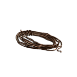

Получено: файл; исходный URL. Изображение подписано на странице-источнике; файл получен с зеркала. Совпадение с оригиналом не проверено. Страница: источник.
Проволока
Мой Мир; историческая таблица, дата редакции не установлена- Тип
- нет данных
- Покупка
- 2 Зб; место покупки не указано
- Продажа
- 1 000 монет
- Как получить
- Произвести в Маяке (ВКонтакте, ZOMBIA; требует сверки).
- Применение
- Участвует в строительстве: Цветник Башня Бассейн Вождь Бизнес-Центр
- Особенности
- нет данных
- Версия и дата
- Мой Мир; историческая таблица, дата редакции не установлена


Данные по источнику · Мой Мир · 20.06.2011
Предварительно: один источник; требует сверки. Требуется сверка.
- Покупка
- 2 зомбаксов (по источнику)
- Продажа
- 1 000 монет
- Применение
- Цветник, башня, бассейн, вождь, бизнес-центр
Данные по источнику · ВКонтакте, ZOMBIA · 27 Июня 2011, 21:43; дата редакции не установлена
Предварительно: Данные одной исторической фанатской страницы; цифры и подписи изображений требуют сверки. Описание и условия сохранены по колонкам без додумывания.. Требуется сверка.
- Описание материала
- Проволока 1000 монет 2 Зомбакса
- Нужен в строительстве
- нет текстовых данных; возможны неподписанные изображения
- Где достать
- Произвести в Маяке
- Нужен в создании
- нет текстовых данных; возможны неподписанные изображения
Данные по источнику · браузерная версия; платформа не указана · дата редакции неизвестна
Предварительно: Подписи и последовательность пиктограмм перенесены без автоматического толкования. Названия, цены и направления стрелок требуют визуальной сверки; возможны ошибки самого сайта.. Требуется сверка.
- Колонка 1 в порядке пиктограмм
- [подпись: Проволока; файл provoloka.png] [подпись: Стоимость (Зомбаксов); файл zombucks.png] 2 [подпись: Продажа; файл moneta.png] 1000
- Колонка 2 в порядке пиктограмм
- [значок: proizvoditsya.png] [подпись: Маяк; файл mayak.png]
- Колонка 3 в порядке пиктограмм
- [значок: stroit.png] [подпись: Волшебный Кролик; файл volshebny_krolik.png] [подпись: Мельница; файл melnica.png] [подпись: Модернизированная Мельница; файл melnica-modern.png] [подпись: Ёлка; файл elka.png] [подпись: Цветик; файл cvetik.png] [подпись: Башня; файл bashnya.png] [подпись: Бассейн; файл basseyn.png] [подпись: Вождь; файл vogd.png] [подпись: Флаг БАТЭ; файл flag_bate.png] [подпись: Флаг Зенита; файл flag_zenit.png] [подпись: Флаг Спартака; файл flag_spartak.png] [подпись: Флаг ЦСКА; файл flag_cska.png] [подпись: Бизнес-Центр; файл biznes-centr.png] [подпись: Останкино; файл ostankino.png]
- Колонка 4 в порядке пиктограмм
- [значок: sosdanie.png] [подпись: Гвозди; файл gvozdi.png] [значок: strelka.png] [подпись: Пирамида; файл piramida.png] [подпись: Пружина; файл prugina.png] [значок: strelka.png] [подпись: Замок; файл zamok.png] [подпись: Флюгер; файл fluger.png] [значок: strelka.png] [подпись: Модернизированный Университет; файл universitet-modern.png]
- Колонка 5 в порядке пиктограмм
Данные по источнику · браузерная Зомби Ферма / Зомби Мания; платформа требует проверки · дата URL не гарантирует дату редакции
Предварительно: Индивидуальная страница прочитана автоматически, подписи значков могут содержать ошибки; даты редакции и независимость от ЗомбиСити не установлены.. Требуется сверка.
- Основной блок страницы и подписи изображений
- Материал [иллюстрация: Проволока] Проволока Цена покупки: 2 [иллюстрация: Зомбаксы] Цена продажи: 1000 [иллюстрация: Монеты] Продать или купить Проволоку можно в Обменке Зомби Фермы Материал Проволоку создать не сложно - были бы друзья в игре и дарили бы бесплатные подарки. В игре Зомби Ферма проволока очень давно - с самого выхода игры в свет. Проволоку можно создать в Маяке: Проволока [иллюстрация: Проволока] = 1 Шестерня [иллюстрация: Шестерня] + 1 Металл [иллюстрация: Металл] [иллюстрация: Стрелка] Маяк [иллюстрация: Маяк] Проволоку можно найти в ценностях: Подарок строителю [иллюстрация: Подарок строителю] Материал Проволока участвует в создании: Флюгер [иллюстрация: Флюгер] Снежное дерево [иллюстрация: Снежное дерево] Гвозди [иллюстрация: Гвозди] Пружина [иллюстрация: Пружина] Огненный обруч [иллюстрация: Огненный обруч] Принимает участие в строительстве: Часовая башня [иллюстрация: Часовая башня] 20 Плиток [иллюстрация: 20 Плиток] Мельница [иллюстрация: Мельница] Ёлка [иллюстрация: Ёлка] Башня [иллюстрация: Башня] Бассейн [иллюстрация: Бассейн] Волшебный кролик [иллюстрация: Волшебный кролик] Бизнес-Центр [иллюстрация: Бизнес-Центр] Вождь [иллюстрация: Вождь] Цветик [иллюстрация: Цветик] Останкино [иллюстрация: Останкино] Свобода [иллюстрация: Свобода] Эйфелевая [иллюстрация: Эйфелевая] Ангар за зомбаксы [иллюстрация: Ангар за зомбаксы] Лувр [иллюстрация: Лувр] Купидон [иллюстрация: Купидон] Большая ёлка [иллюстрация: Большая ёлка] Голубая ракета [иллюстрация: Голубая ракета] Флаг БАТЭ [иллюстрация: Флаг БАТЭ] Флаг Зенита [иллюстрация: Флаг Зенита] Флаг ЦСКА [иллюстрация: Флаг ЦСКА] Флаг Спартака [иллюстрация: Флаг Спартака] Флаг Марафонца [иллюстрация: Флаг Марафонца] Мобильный телефон [иллюстрация: Мобильный телефон] Назад в Подножье [иллюстрация: Назад в Подножье] Казино [иллюстрация: Казино] Библиотека [иллюстрация: Библиотека] Фургон [иллюстрация: Фургон] Клетка [иллюстрация: Клетка] Пушистый третий [иллюстрация: Пушистый третий] Приз за выполнение заданий: Клады [иллюстрация: Клады] Марафон 17 [иллюстрация: Марафон 17] Помощь [иллюстрация: Помощь] Прогноз
Данные по источнику · браузерная игра; социальная сеть не указана · 01.04.2015 — дата статьи; дата последних правок неизвестна
Предварительно: Фанатские источники могут быть зависимыми; сверены только отмеченные факты, вероятности и актуальность не подтверждены.. Требуется сверка.
Текст источника без реконструкции
Участвует в строительстве: Цветник Башня Бассейн Вождь Бизнес-Центр
Связанные сущности
нет проверенных связей — требуется сверка.
Источники
- Таблица материалов — zombiemail.do.am; изображения таблицы с zombi.at.ua, авторство текста не установлено
- ZOMBIA: прочитана индивидуальная карточка; 27 Июня 2011, 21:43
- Каталог материалов: строка и подписи значков
- Zombie-island.moy.su: прочитана отдельная статья
- FatalGame: отдельная статья, выборочная сверка